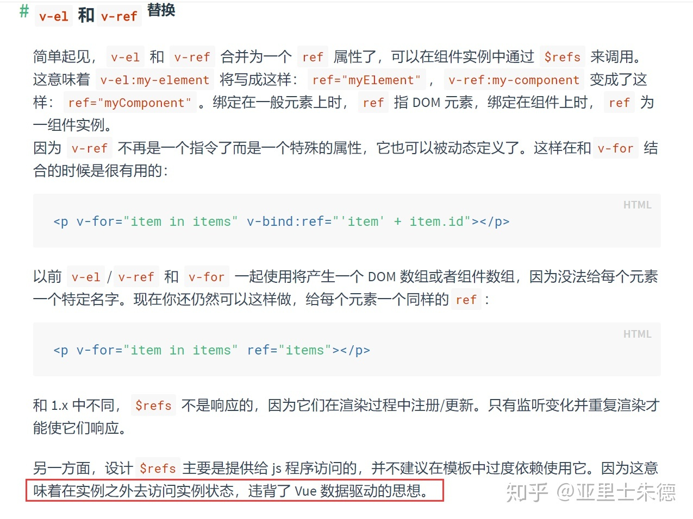

Vue 是 MVVM？
v1.0 版本
在vue v1.0版本的官网上有这么一张图：

可以看到在v1.0版本，当时vue把自己定义为一个MVVM模型的框架：
Vue.js 拥抱数据驱动的视图概念。通俗地讲，它意味着我们在普通 HTML 模板中使用特殊的语法将 DOM “绑定”到底层数据。一旦创建了绑定，DOM 将与数据保持同步。每当修改了数据，DOM 便相应地更新。这样我们应用中的逻辑就几乎都是直接修改数据了，不必与 DOM 更新搅在一起。
v2.x v3.x 版本
但是在后来的版本，vue的官网上就移除了这张图的介绍，取而代之的是下面这句话：
虽然没有完全遵循 MVVM 模型，但是 Vue 的设计也受到了它的启发。
在v2.x、v3.x版本，vue更像是一个MV*模型，因为它确实有些地方没有遵循MVVM模型。其实不必纠结这个*具体是指什么。
先顺便了解一下 MVC
引用阮一峰老师的文章，在前端层面可以很容易的理解什么是MCV：
- 模型（Model）：数据保存
- 视图（View）：用户界面
- 控制器（Controller）：业务逻辑

- View 传送指令到 Controller
- Controller 完成业务逻辑后，要求 Model 改变状态
- Model 将新的数据发送到 View，渲染出视图（用户得到反馈）
Vue 是 MVVM
MVVM是Model-View-ViewModel的缩写。阮一峰老师也介绍了MVVM，但是实在是过于概括。这里推荐廖雪峰老师的文章：
MVVM 最早由微软提出来，它借鉴了桌面应用程序的 MVC 思想，在前端页面中，把 Model 用纯 JavaScript 对象表示，View 负责显示，两者做到了最大限度的分离。
把 Model 和 View 关联起来的就是 ViewModel。ViewModel 负责把 Model 的数据同步到 View 显示出来，还负责把 View 的修改同步回 Model。
这说的不就是双向绑定吗？这句话跟vue 1.0版本的介绍完美契合，所以明白了为什么当时vue说自己是一个MVVM模型的框架。
Vue 不是 MVVM
那又为什么说vue不是MVVM模型呢？我又找到了知乎的这个问题的一个答案：

ref 属性虽然为父组件操作子组件大开了方便之门，但是它绕开了 ViewModel 来访问 View。
严格的 MVVM 要求 View 不能和 Model 直接通信，而 vue 在组件提供了 $refs 这个属性，可以直接操作 View，违反了这一要求。
所以说vue不是MVVM模型，或者说没有完全遵循MVVM模型。
总结
说白了，无论是MVC中的C，还是MVVM中的VM，都好像是用来干脏活累活的：
MVC中的C对应业务逻辑MVVM中的VM对应vue的数据绑定和事件监听
可以把VM理解为就是C的一个实例，因为还有MVP，甚至以后可能还有MVA、MVB…等等，它们多多少少都是借鉴了MVC而演变而来。
所以vue是MVVM也好，不是也罢，这些都不重要，重要的是了解它们背后的思想和原理。